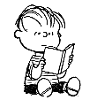

My Fifteen Favorite Novels
by Levi Asher
Updated: September 14, 1996
This list doesn't change much. It lay dormant for a year most
recently, and I was starting to wonder if I'd ever discover a
book good enough to knock off one of my top fifteen. Then my
wife's friend took a college course in Dostoevsky, and Meg and
I agreed to read a few of his books (a first for both of us)
to help her. "Notes From Underground" blew me away. Completely.
Somebody had to go from my top 15, and this was a hard choice.
I finally decided to give James Joyce a rest, and let him sit
for a little while in the Honorable Mentions section. Sorry,
James, but the book is a little long.
NOTE: a couple of these books aren't novels, but rather collections
of short stories. So I guess this is my Fifteen Favorite Works of
Book-Length Prose Fiction. but that doesn't sound as good.
1. City of Glass by
Paul Auster
Hah! You probably thought I'd put 'On The Road' as number 1. Nope, it's
this one. About five years ago my then-girlfriend/now-wife called me up
and told me that she'd just read an incredible and bizarre book called 'City
Of Glass' and was still in a daze from it. She called me back the next
day and said she'd just read it again, and was now even more
confused about what it meant. I knew this had to be something special. I started
reading it that Saturday at around noon in my apartment alone, took a nap at
about three-thirty, woke up and kept reading until I was done. This is the
only time in my life I read an entire book in one sitting.
It's a pseudo-detective story about an obscure mystery novelist in New York
City who stumbles onto a case involving a demented genius professor who
performed a horrible language experiment on his toddler son years ago. Now
the son is grown up and the professor has been let out of jail. This book is
wild. By the end I was so dizzy I didn't know what my name was anymore. Which
is exactly what this book is trying to achieve.
The book may seem sophomoric at first glance -- an snooty English major friend
of mine once dismissed Auster as 'too glib.' But she's wrong.
'City of Glass' is the first part of a trilogy, but the other two books really
just serve to embellish this one, at least in my opinion. Auster keeps getting
more and more popular, which is kind of bumming me out; he used to be my
wife's and my little secret. His book 'The Music of Chance' was made into a
good movie, and he also wrote the movie 'Smoke' and was involved with
another experimental film improvised on the same set, 'Blue In The Face.'
'City of Glass' has also been published in an
Art-Spiegelman-style comic book edition, but I'd recommend starting with the
text original.
2. On The Road by
Jack Kerouac
I think I've said enough about this book
elsewhere.
3. Moby Dick by
Herman Melville
This is sort of a 19th Century version of 'On The Road.' At least that's
the way I see it. Like Kerouac, Melville is recounting a story based
on his own adventures (he was Ishmael), although it was the sea, not
the highways of America, that beckoned this young writer to follow.
The great surprise for me was this book's sense of humor and
hugely expansive sense of the infinity of the human soul. The
odd and unique characters who man the whaling ship are described
with great affection and a sense of limitless wonder. I must admit I
found Ahab's 'obsession' less convincing than other parts of this
novel. His vengeance seems like a device to me; it's Ishmael who I
care about. And the great mad cannibal Queequeq, and the crazy sea
salts eating their whale steaks and rolling blubber off huge
leviathans (I love saying 'leviathans') in great slippery strips.
The final piece in my web fiction project,
Queensboro Ballads
is a tribute to Melville and this book.
4. The Castle by
Franz Kafka
This is an absolutely hilarious short novel (yes, Kafka is meant to be
funny!) about a village of fools. A young man arrives in a small country
town somewhere in the recently-dismantled Holy Roman Empire, intending to
transact a mundane bit of business with the owners of a castle overlooking
the town. He finds that everyone in town lives in a state of
awe and terror regarding the mysterious and powerful officials (almost nobody
has met them) who reside in the castle, and as the young man attempts to gain
permission to visit the castle he is presented with an increasingly baroque
set of rules and regulations, until he is made to understand that nobody can
ever visit the castle, and neither can he nor anyone else escape the deadening
power it has over their lives.
I related to this novel especially because until recently I was employed
as a database consultant by a large and elite Wall Street bank, and the
similarities between the confused employees who cowered in fear of their
managers and the villagers in Kafka's mythical town were striking.
5. The World According to Garp by
John Irving
Remember this, from the early eighties? I was in college when I read it, and
it proved to me (at a time when I was thinking otherwise) that the novel was
still a living, growing art form. The movie with Robin Williams was much too
simple; if you haven't read or seen this, skip the video and dig up the book.
You won't be sorry.
6. Kin-Flicks by
Lisa Alther
This was a great, popular novel in the Seventies. Maybe it'll be rediscovered
eventually. Ginny is a confused Southern girl who dates a big dumb football
player, then runs off with the town delinquent, then becomes an incredibly
repressed philosophy major, then a wild country lesbian, a bored housewife,
and so on. Some of it is funny but it's the serious message that means the
most to me. In the last pages she watches cells divide under a microscope and
finally starts to understand the pattern she's been living. Great stuff.
7. Notes From Underground by Fyodor Dostoevsky
A good philosophical book (say, "Zen and the Art of Motorcycle
Maintenence," or "Franny and Zooey") leaves you thinking, but
a great philosophical book does more. It should blow your entire
world-view to pieces and leave you utterly confused, grasping
desperately for answers. You should walk around in a daze for
weeks afterward. "Notes From Underground," which I finished two
weeks ago, has been having that effect on me.
It's a short first-person piece, part essay on morality and society,
part tragedy and part black-comedy. The first section lays out an
articulate and convincing argument that the human spirit will always
defeat grand attempts at social engineering -- there will always be
an "underground." But the second section shifts from the ethical
view to the personal, and the narrator, himself the archetypal
"underground man," dissects himself in a set of pathetic anecdotes
full of social blunders, jealous obsessions and deep cruelty.
Dostoeovsky's view of humanity is very bleak, sordid and hopeless
here. I'd always thought of Kafka's "Metamorphosis" as the
pinnacle of pathetic characterization, but this book makes Kafka's
seem as cheerful as an episode of "Barney."
Ultimately, I'm still working out in my mind what this book means.
I do think it's a clue to the interpretation of Kerouac's similarly
titled "Subterraneans" (especially as Kerouac was known to have been
deeply affected by "Notes"). I'm also trying to read some of
Dostoeovsky's longer novels now, but so far they're nowhere
near as original.
8. Pride and Prejudice by
Jane Austen
This is the oldest book on this list. Austen predates Dickens, George
Eliot, Dosteovsky, Flaubert. It was a revelation to me, when I read this,
that a certain kind of sharp sense of humor I'd thought of as distinctly
modern could have existed so long ago, in a little provincial English village.
Jane Austen has become "hip" again recently, due to a flood of movies like
"Emma" and "Sense and Sensibility." Ignore these movies -- they always
get it wrong. Jane Austen was not about fine costumes and lush settings.
It's all in the narrative voice, and you can't get that without the book.
9. The Mezzanine by
Nicholson Baker
This whole book takes place on an escalator on the way back from lunch. Some
people don't get a kick out of this kind of thing, but I do. We examine
everything the narrator thinks about on the way to the mezzanine, and then
the book is over. And everything he thinks about is, somehow, surprising,
original and real.
Nicholson Baker is a weird case because I hated his most popular
novel, 'Vox,' which was about a phone-sex call and was successful
mainly because it was so racy. Baker doesn't write well about
people. In fact his second novel, 'Room Temperature,' tried to be a
follow-up to "The Mezzanine' by examining the author's thoughts as he fed
his infant daughter a bottle, but even that was too human for him and the
book was a bore. But when a subject gets him going -- a plastic McDonald's
straw, a paper towel dispenser, whatever -- he's the best. I've enjoyed two
other things he wrote: "U and I," a pitiless investigation into his own
obsessive admiration for John Updike (which I loved despite the fact that
I'm not crazy about Updike's writing, or his smug literary principles) and
"Subsoil," a stunning horror story about potatoes (what else?) that ran in the
New Yorker a couple of years ago.
10. Love in the Time of Cholera by
Gabriel Garcia Marquez
I avoided reading this for a long time. My wife and sister both had to really
work on me to overcome my resistance to what looked distinctly like a
college-assignment kinda novel. The first few chapters did nothing to
convince me either. A very respectable doctor has a pretty wife in olden-day
Colombia; his wife had once been in love with another man. Not riveting. I
read dutifully, and little by little the characters started creeping up on
me. About halfway through I told my wife and sister: okay, it's not so bad.
Towards the end I said: hey, it's pretty good. Then the book really caught
fire in an explosive and heartbreaking final scene on the dried-up Magdalena
River, I started to get serious chills up my spine ... and now here the book
is on my Fifteen Favorites List.
11. Washington Square by Henry James
James is an ideal for me, I suppose, of the true writer. I can't think of
any other novelist whose every sentence seems so lovingly wrought, so
rare and precious. That's not to say I don't occasionally fall asleep
while reading these rare and precious sentences.
Until recently, I listed "Portrait of a Lady" as my favorite James novel.
But now I've heard "Portrait of a Lady" is going to be a movie starring
Nicole Kidman, and even though the movie won't be out for months, I
already don't like it. So, in advance of this event, I'm switching
my favorite choice to "Washington Square," a short and very sharp
tale of love and greed in old New York. This was already a movie
(starring Olivia DeHavilland, renamed "The Heiress") -- but
they made movies better back in the days.
12. The Secret History by
Donna Tartt
Several people have mailed me politely asking if I really thought this
book deserved such a high ranking. Well, it's a year later, and just to
drive my point home I'm moving it up a notch to Number 12 (sorry, Philip
Roth). Hey, I don't care if she went to Bennington College with
Bret Eaton Ellis -- that's not her fault, and how was she to know how bad
his books would be? Anyway, it probably burns Bret up that Donna
Tartt can write circles around him.
What a talent! She describes a sad, serious boy entering a Bennington-like
upper-crust Vermont college and getting drawn into an odd group of Classics
students intensely involved in their studies. It turns out they've been
trying to simulate an ancient Greek Dionysian ritual (aren't we all?), and
this gets out of hand and leads to all kinds of creepy, exciting endeavors.
The publishers of the paperback version of this book seems to be
trying to sell it as a suspense story, and got John Grisham to write a blurb.
But this book should make John Grisham cry in his sleep, because I read 'The
Firm' and I know he couldn't create characters like the impressive Henry or
the hilariously annoying Bunny if his life depended on it.
13. Where I'm Calling From by
Raymond Carver
I can't figure out how Carver did it. Each story is the same; it begins
badly, with a pathetic, annoying and tiresome character narrating in a
charmless voice. You read about this person's pitiful endeavors, and a
slow fire starts to burn. Suddenly, about three paragraphs from the end,
the story explodes like a firecracker in your hand.
The really amazing thing is how Carver pulls this trick over and over
again. It's quite impressive. I mean, some of these stories had me
crying. As for 'Short Cuts,' Robert Altman's movie based on Carver's works,
it was worth watching, but you gotta read the stories. The one I chose for
this list is a comprehensive collection published not long before Carver's
premature death from cancer.
14. Goodbye Columbus by
Philip Roth
Roth captured the crisis and adventure of the Americanized, suburbanized Jew
of the 1950's. As a member of this group (except that I was born in the
1960's), I guess I have a special connection to this topic. I also think
these are beautifully crafted, funny and honest stories. The long title
story -- poor City Jew falls in love with his rich suburban female
counterpart -- is my favorite.
15. Revenge of the Lawn by Richard Brautigan
Brautigan was a simple and pure writer. He stories were short -- a couple
of pages sometimes, or even a couple of paragraphs -- because there was so
little artifice. The story "1/3, 1/3, 1/3," about three hippie oddballs
"pounding on the gates of American Literature" is my favorite.
HONORABLE MENTIONS
Ulysses by James Joyce (previously #6)
Diary of a Madman and Other Stories by Nikolai Gogol (previously #14)
Thank You Jeeves by P.G. Wodehouse (previously #13)
Red Dirt Marijuana and Other Tastes by Terry Southern
Heart of Darkness by Joseph Conrad
Microserfs by Douglas Coupland
The Fan Man by William Kotzwinkle
Fisher's Hornpipe by Todd McEwen
Zen and the Art of Motorcycle Maintenence by Robert Pirsig
Breakfast of Champions by Kurt Vonnegut
One Flew Over The Cuckoo's Nest by
Ken Kesey
Falling in Place by Ann Beattie
Too Far To Go by John Updike
Franny and Zooey by J.D. Salinger
The Color Purple by Alice Walker
Naked Lunch by William S. Burroughs
Great Expectations by Charles Dickens
Lolita by Vladimir Nabokov
The Great Gatsby by F. Scott Fitzgerald
Siddhartha by Hermann Hesse
Bright Lights Big City by Jay McInerney
White Noise by Don DeLillo
Was by Goeff Ryman
The Magus by John Fowles
Literary Kicks
by
Levi Asher